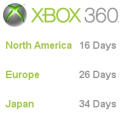

CESPage.com Xbox Weekly Update Eleven
Xbox 360 Countdown Continues, 360 Hour Tour and Xbox 360 Title in Focus
By CESPage.com Xbox, Published 6th November 2005
Xbox 360 Countdown Continues
With just over two weeks to go to the launch of the Xbox 360 in North America and ten days later in Europe. Stores in Europe should be seeing the Kiosks that those in North American stores have already been playing for a couple of weeks.
Accessory in Focus
This week's accessory in focus is the Xbox 360 Headset which is bundled with the Xbox 360 System package. The Xbox 360 Headset enhances the experience of
online gaming, community and Xbox Live, allows strategising with team mates or to just chat with friends while playing your favourite games. It is also
possible to record short voice messages for friends or family through the free Xbox Live Message Service or connect with others using the headset in the
place of a phone.
The microphone can be adjusted for optimal sound quality and the lightweight, over-the-head design enables comfortable use and the headset plugs directly
into the Xbox 360 Wireless or Wired controller.
360 Hour Tour
This is the chance for UK gamers to play the Xbox 360 before the release on the 2nd December, touring four cities starting with Glasgow on the 4th of November,
through Birmingham, Leeds and ending in London on 27th of November. Gamers can try out some of the Xbox 360 launch titles such as Perfect Dark Zero,
Project Gotham Racing 3, Kameo: Elements of Power and Dead or Alive 4 plus other games available on Xbox.
CESPage.com Xbox went to Glasgow to check out the event with over thirty game kiosks there this was quite a large event allowing gamers to try out other games like
GUN, Condemned, NBA 2K6, FIFA 2006 Road to World Cup, Peter Jackson's King Kong.
If you want to go the event will be in Birmingham between the 11th and 13th of November, in Leeds between 18th and 20th of November and ends in London with the event
between the 25th and 27th of November.
You can read more about the CESPage.com Xbox visit to this gaming event in Glasgow in the article linked below.
View: 360 Hour Tour
Xbox 360 Title in Focus
This week we will be looking at a title that looks great that is not from Microsoft Game Studios, the title: Gears of War.
The game Gears of War thrusts gamers deep into the harrowing story of humankind's epic battle for survival against the Locust Horde which is a
nightmarish race of creatures that surface from the bowels of the planet.
Players take on the role of Marcus Fenix who is a disgraced former war hero. Marcus seeks personal redemption as he leads his fire team against the onslaught
of the Locust Horde.
The experience of playing Gears of War is so intensely emotional and immersive that playing will be like controlling a blockbuster action movie.
Games can take cover using the interactive and dynamic environments and suppress the enemy with their weapons and team mates to outwit and outfight
their terrifying enemies.